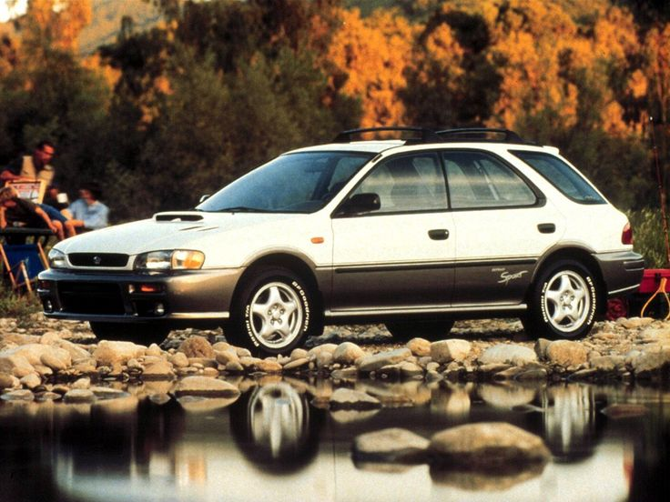
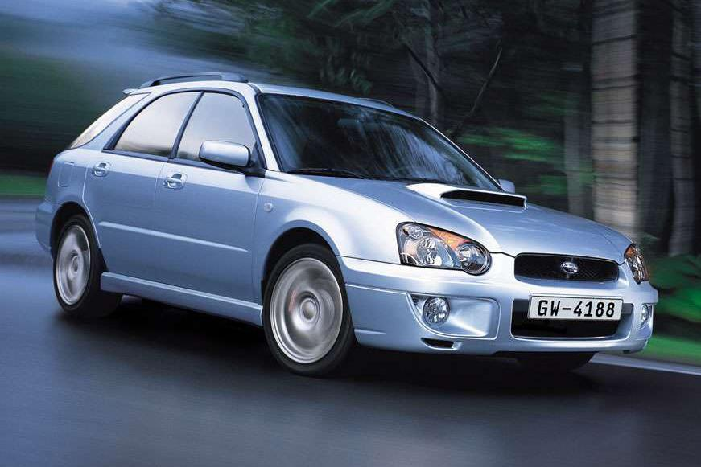
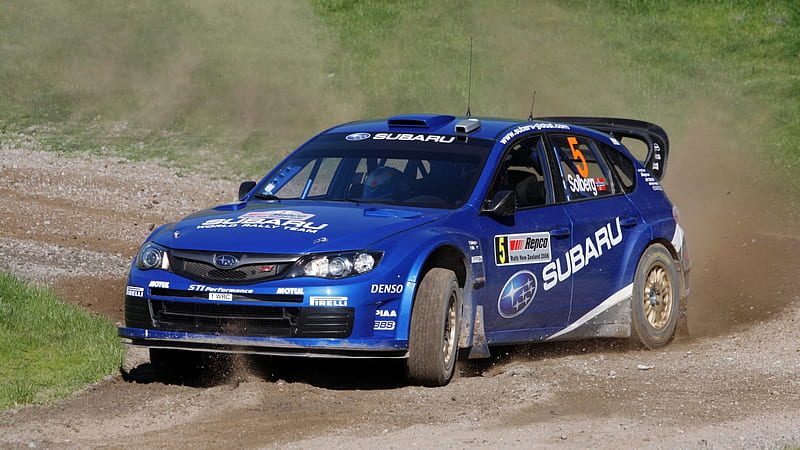

2016 Subaru Impreza Sport CVT - Death Valley, California USA
Stock Specifications:
Coefficient of drag (Cd): 0.32
Wheelbase: 104.1"
Weight: 3,109 lbs
Ride Height: 5.9"
Est. Top Speed: 120 mph
17"x7" wheels 205/50/R17 tyres
Length: 174"
Width: 68.5"
Height: 59.4"
Track (f/r): 59.4"/59.6"
Lineage
The 4th generation GP7 hatchback chassis comes from a long line of Subaru wagons starting namely of
the iconic
first generation GF Outback Sport Wagon (1993-2001).

GF chassis - Outback Sport - 1st generation
The GG was the second generation 5 door wagon (2002-2007).

GG chassis - Outback Sport - 2nd generation
The 3rd generation Impreza WRX GH(narrow) / GR (wide) (2008-2013) hatchback shares a similar uni-body design and
has competed in rally and other racing events .

GH chassis - WRX - 3rd generation
You might say that the 4th generation GP(7) chassis (2012-2016) also shares this motor sports pedigree. The same GP chassis is
used in both the Impreza hatchback and the XV Crosstrek.
GP chassis - Impreza Sport - 4 generation
The GT chassis code is the 5th generation 5-door wagon/hatchback (2017-2021) which is on the "global platform".
GT chassis - Impreza Sport - 5th generation
For all intents and purposes, the tuning and modifications contained in these
pages are on the 4th generation Impreza (2012-2016) and Crosstrek (2013-2017) GP chassis but may also relate to other subaru models past and present.